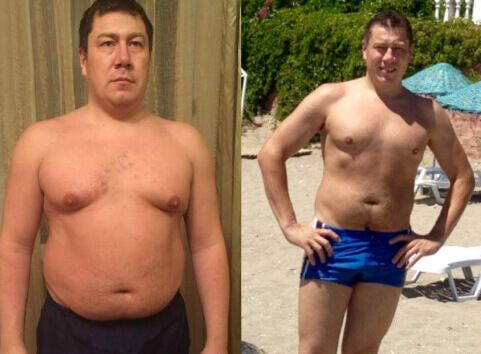
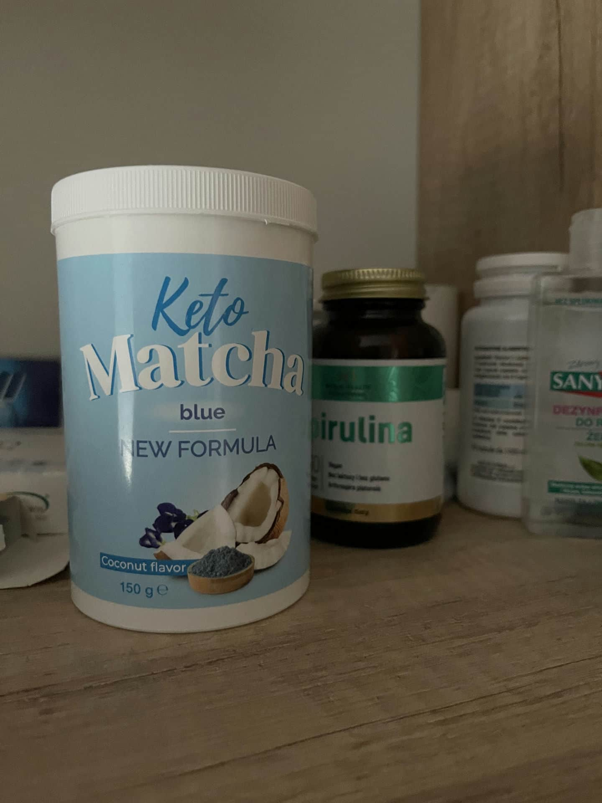
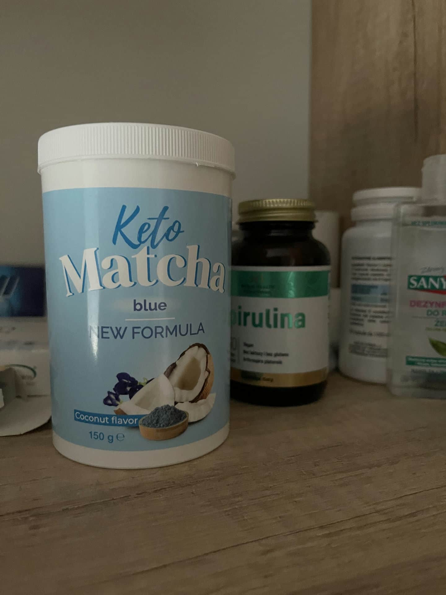
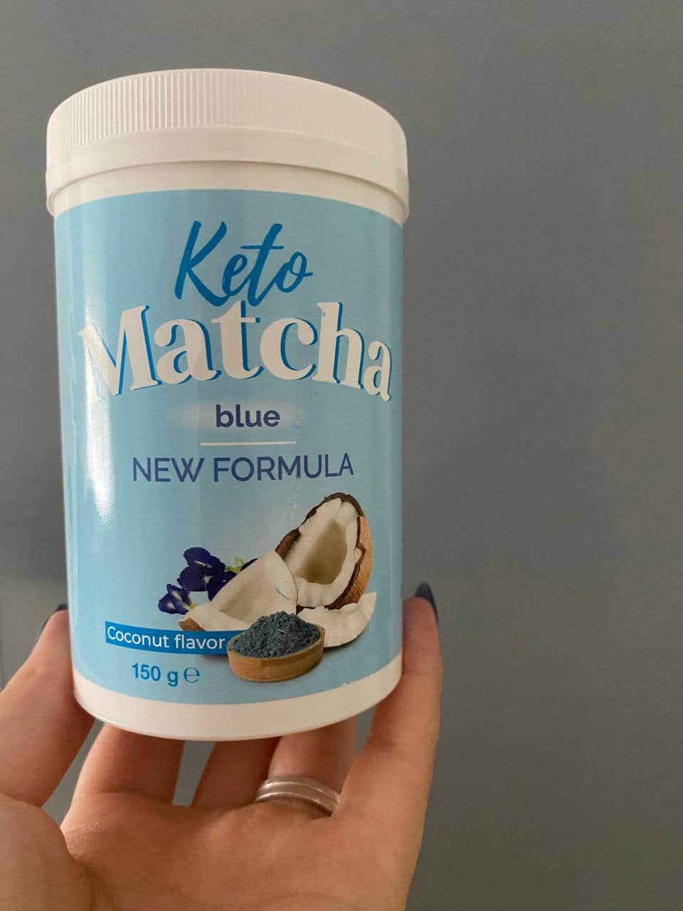
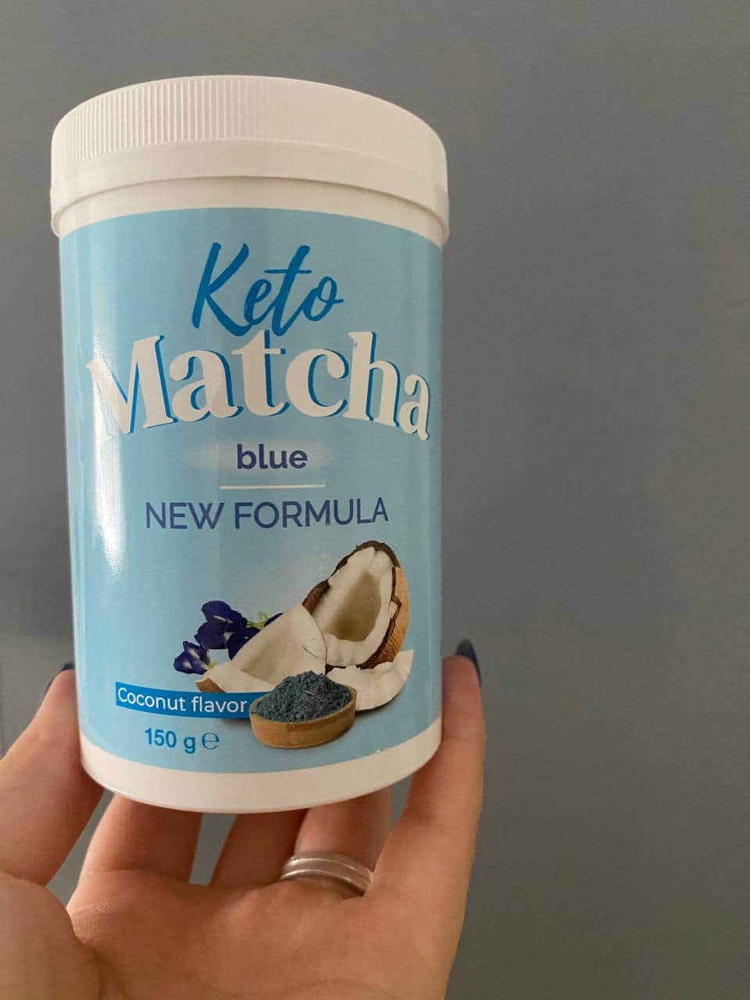
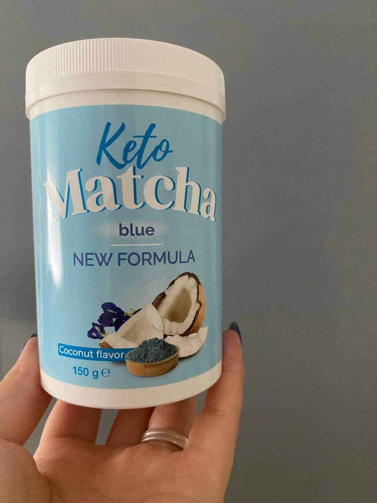
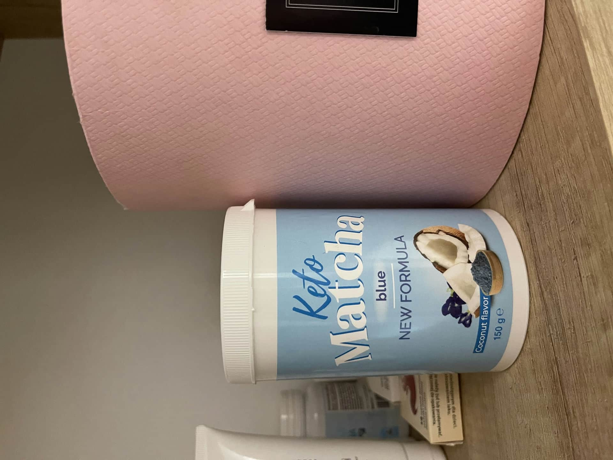
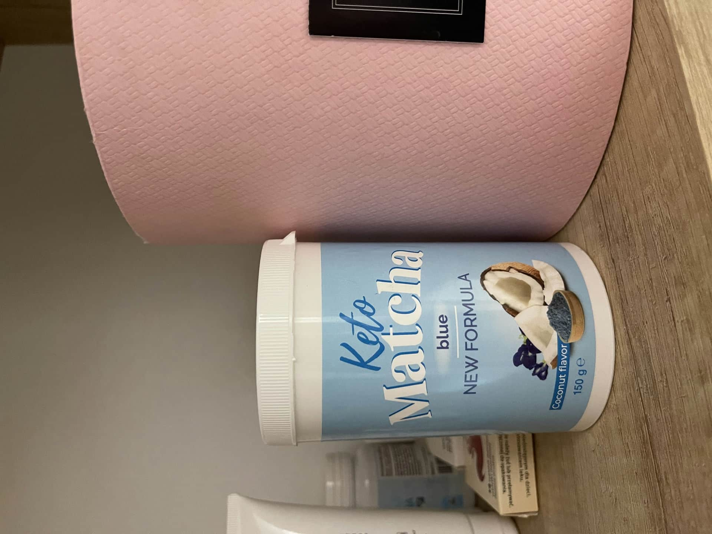
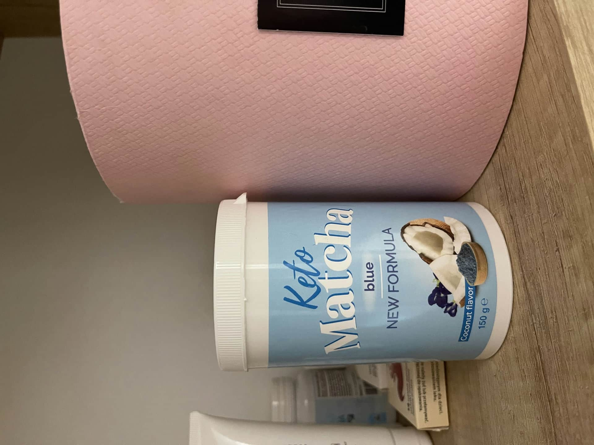

Tomasz Goldberg
13 komentarzy
Do naszej redakcji przychodzi wiele listów od czytelników. "Nie mogę schudnąć” - najbardziej aktualny temat przed sezonem plażowym. Dlatego nie można obejść się bez porady dietetyka!

"Rok temu całkowicie zrezygnowałem z cukru i fast foodów, 3 razy w tygodniu chodzę na siłownię, codziennie pompuję na siłowni i biegam rano. Ale im więcej wysiłku wkładam, tym mniejszy widze postęp. W ciągu roku schudłam tylko 6 kg, a chciałam zrzucić 10-12. Co mam zrobić?”
Maria, 32 lata
"Odchudzam się przez całe świadome życie. Jem mało, pracuję fizycznie, po pracy - sekcja siatkówki i basen. Ale i tak jestem gruba! Przy takim trybie życia ważę aż 82 kg i nie chudnę. A wystarczy trochę odpocząć, zjeść czekoladę lub pominąć trening, natychmiast zyskuję 3-4 kg. Pomocy!”
Magdalena, 41 lat"Często przychodzą do mnie "wiecznie jestem na diecie" kobiety i mężczyźni, dosłownie ze łzami w oczach. Dla wąskiej talii i smukłych bioder są gotowi siedzieć miesiącami na sałacie i jabłkach, pocić się na siłowni, zrezygnować z ulubionych deserów... ale z jakiegoś powodu nie chudną! Próbowali wszystkiego, a efektów albo wcale nie ma, albo waga szybko powraca po najmniejszym załamaniu".
Tomasz Goldbergdietetyk, specjalista zdrowego odżywiania
Dlaczego tak się dzieje? Wszystkiemu winne jest niskie tempo przemiany materii. U osób podatnych na pełnię jest powolne z natury. A diety hamują je jeszcze bardziej. Dlatego jeśli ważysz powyżej normy, drastyczne ograniczenie jedzenia tylko zaszkodzi.
Diety niskokaloryczne to wielki stres dla organizmu. Nasze ciało czuje się tak, jakby zostało "ogłoszone głodowe embargo", włącza tryb oszczędzania energii i jeszcze szybciej gromadzi masę tłuszczową - nawet jeśli łączysz dietę z regularnymi treningami.
I odwrotnie, im bardziej zrelaksowane jest twoje ciało, tym bardziej chętnie żegna się z dodatkowymi kilogramami. Ale w naturalny sposób taki stan jest trudny do osiągnięcia. Do przyspieszenia metabolizmu potrzebne są specjalne środki.
Świetnym przykładem jest życie mnichów buddyjskich w odległych klasztorach Laosu. Spędzają prawie cały dzień siedząc, modląc się, żyjąc dzięki hojnym jałmużnom od wiernych i prawie co wieczór przed snem organizują wystawne uczty.

Zwykły Europejczyk z powolnym metabolizmem z prowadzeniem takiego stylu życia ważyłby ponad 100 kg. Ale mnisi z Laosu pozostają szczupli i zdrowi aż do starości!
Moi koledzy badali to zjawisko w latach 80. Okazało się, że w przerwach między modlitwami i medytacjami mnisi mają obowiązkowy rytuał - filiżankę matcha. Jest to przyjemny napój na bazie liści japońskiej herbaty, zmiażdżony na drobny proszek. Mnisi mówią, że pomaga utrzymać ciało w formie i zapobiega chorobom i tyciu.
Herbata matcha jest cennym źródłem tiaminy, teofiliny, ryboflawiny, retinolu i innych substancji przyspieszających metabolizm w sposób naturalny. Ci, którzy wcześniej przytyli przez dodatkowe bułeczki, z tą herbatą szybko rozstają się z dodatkowymi kilogramami i nie przybierają już na wadze. Katechiny w składzie matcha rozkładają komórki tłuszczowe (lipidy), które pochodzą z pożywienia i nie pozwalają im osiąść na biodrach i talii. Duże cząsteczki tłuszczu są kruszone przez katechiny na mniejsze trójglicerydy, które są niezauważalnie wydalane z organizmu wraz z moczem, kałem i potem.
Udowodniono klinicznie, że herbata matcha, między innymi, przywraca
pracę serca, naczyń krwionośnych i układu hormonalnego, stymuluje regenerację tkanek, a nawet
zapobiega starzeniu się i związanemu z wiekiem zwiotczeniu (opadaniu) skóry.
W naszym kraju herbata matcha jest sprzedawana pod marką . Napój ten jest wzbogacony olejem MCT, który wspomaga odchudzanie poprzez przekształcanie tłuszczu w energię i przyspieszenie metabolizmu, ekstraktem kokosowym, który poprawia trawienie, usuwa toksyny, sole i inne szkodliwe substancje z organizmu, a także ekstraktem z awokado, który sprzyja szybkiemu nasyceniu i poprawia kondycję skóry. pomaga ciału przejść w stan ketozy 10 razy szybciej, niż przy specjalnej diecie. Według moich obserwacji po 3-4 tygodniach codziennego przyjmowania tego napoju ludzie chudną do 12-15 kg bez niskokalorycznych diet i wzmocnionego treningu.
Tak wyglądają moi klienci, którzy włączyli do swojej diety. Publikuję zdjęcia za ich zgodą:
 Marek, 39 lat.
Do-104 kg, po-89 kg
 Milena, 27
lat.
Milena, 27
lat.
Do-92 kg, po 74 kg
 Julia, 32
lata.
Julia, 32
lata.
Przed-81kg, po-68 kg
 Sylwia, 24
lata.
Sylwia, 24
lata.
Do-77 kg, po-62 kg
Nie męczą się na diecie i praktycznie nie uprawiają sportu-maksimum, poranne ćwiczenia. Ale dzięki ich metabolizm w ciągu zaledwie miesiąca osiągnął równowagę. Teraz nadwaga im nie zagraża.
tylko tutaj . To oficjalny dostawca herbaty matcha z Azji. Nie mogę ręczyć za innych sprzedawców-czasami pod przykrywką zwykła, zabarwiona herbata granulowana. Dlatego lepiej i bezpieczniej jest zamówić go na oficjalnej stronie internetowej.

 


Kinga
A czy ktoś wie, czy można pić dłużej, niż miesiąc? Instrukcje mówią, że terapia trwa 30 dni, a ja muszę schudnąć ponad 25 kg

Helena
 

Zaczęłam pić, jadłam wszystko, co lubię, a schudłam 9 kg. Uważam, że dietetyk powiedział wszystko właściwie: nie warto zamykać się na siłowni, nie mam na to czasu i chęci. Takie rozwiązanie dla takich jak ja jest po prostu idealne! Polecam! Oto moje wyniki

Michał
 

Do ważyłem 90 kg. W młodości zawsze byłem szczupły, a wraz z wiekiem stopniowo pojawił się brzuch, boki. Dużo trenowałem, ale nie mogłem powrócić do swojej normalnej formy. Potem, za radą przyjaciela, spróbowałem tego środka i oto, co za kilka miesięcy z tego wyszło!


Dorota
Byłam w Laosie, widziałam tę głęboko herbatę. Gdybym wiedziała, że pomaga schudnąć, przywiozłabym ze sobą cały worek!

Lilia
Kinia , a nie próbowałaś po prostu kontrolować swoją dietę? Roztyją się, a potem nie wiedzą, jak wrócić do formy.
Jan
Lilia , Jako lekarz powiem, że są ludzie, którzy genetycznie mają skłonność do nadwagi, a konwencjonalne diety nie pomagają-potrzebujesz wtedy dodatkowej pomocy. Jeśli nie jesteś podatna na nadwagę-masz szczęście, ale zapewniam cię, nie wszyscy są tak szczęśliwi jak ty.